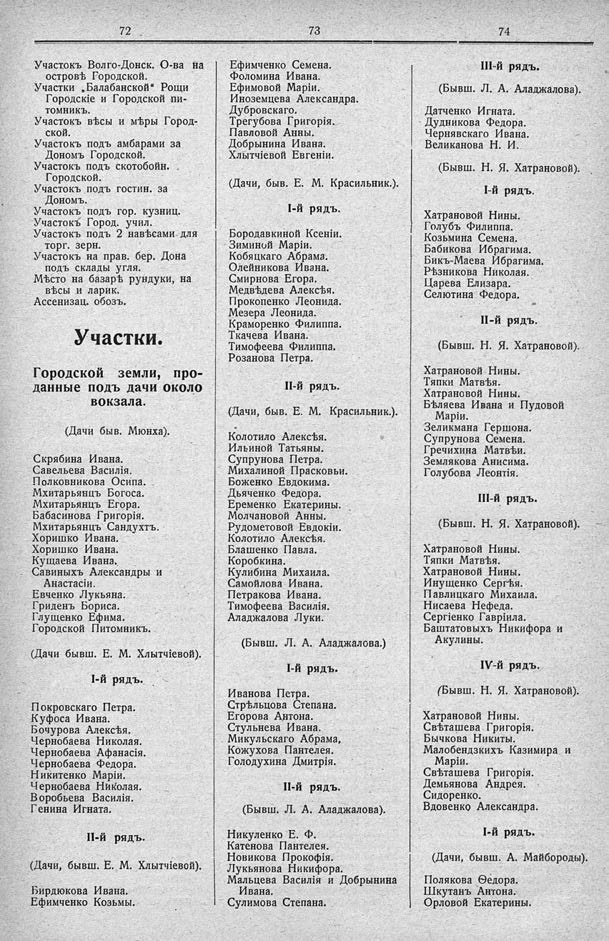

Лист источника 530
Скан

Распознанный текст
72
Участокъ Волго-Донск. О-ва на
островѣ Городской.
Участки „Балабанской“ Рощи
Городскіе и Городской пи-
томникъ.
Участокъ вѣсы и мѣры Город-
ской.
Участокъ подъ амбарами за
Дономъ Городской.
Участокъ подъ скотобойн.
Городской.
Участокъ подъ гостин. за
Дономъ.
Участокъ подъ гор. кузниц.
Участокъ Город. учил.
Участокъ подъ 2 навѣсами для
торг. зерн.
Участокъ на прав. бер. Дона
подъ склады угля.
Мѣсто на базарѣ рундуки, на
вѣсы и ларик.
Ассенизац. обозъ.
Участки.
Городской земли, про-
данные подъ дачи около
вокзала.
(Дачи быв. Мюнха).
Скрябина Ивана.
Савельева Василія.
Полковникова Осипа.
Мхитарьянцъ Богоса.
Мхитарьянцъ Егора.
Бабасинова Григорія.
Мхитарьянцъ Сандухтъ.
Хоришко Ивана.
Хоришко Ивана.
Кущаева Ивана.
Савиныхъ Александры и
Анастасіи.
Евченко Лукьяна.
Гриденъ Бориса.
Глущенко Ефима.
Городской Питомникъ.
(Дачи бывш. Е. М. Хлытчіевой).
I-й рядъ.
Покровскаго Петра.
Куфоса Ивана.
Бочурова Алексѣя.
Чернобаева Николая.
Чернобаева Афанасія.
Чернобаева Федора.
Никитенко Маріи.
Чернобаева Николая.
Воробьева Василія.
Генина Игната.
II-й рядъ.
(Дачи, бывш. Е. М. Хлытчіевой).
Бирдюкова Ивана.
Ефимченко Козьмы.
73
Ефимченко Семена.
Фоломина Ивана.
Ефимовой Маріи.
Иноземцева Александра.
Дубровскаго.
Трегубова Григорія.
Павловой Анны.
Добрынина Ивана.
Хлытчіевой Евгеніи.
(Дачи, быв. Е. М. Красильник.).
I-й рядъ.
Бородавкиной Ксеніи.
Зиминой Маріи.
Кобяцкаго Абрама.
Олейникова Ивана.
Смирнова Егора.
Медвѣдева Алексѣя.
Прокопенко Леонида.
Мезера Леонида.
Краморенко Филиппа.
Ткачева Ивана.
Тимофеева Филиппа.
Розанова Петра.
II-й рядъ.
(Дачи, быв. Е. М. Красильник.).
Колотило Алексѣя.
Ильиной Татьяны.
Супрунова Петра.
Михалиной Прасковьи.
Боженко Евдокима.
Дьяченко Федора.
Еременко Екатерины.
Молчановой Анны.
Рудометовой Евдокіи.
Колотило Алексѣя.
Блашенко Павла.
Коробкина.
Кулибина Михаила.
Самойлова Ивана.
Петракова Ивана.
Тимофеева Василія.
Аладжалова Луки.
(Бывш. Л. А. Аладжалова.)
I-й рядъ.
Иванова Петра.
Стрѣльцова Степана.
Егорова Антона.
Стульнева Ивана.
Микульскаго Абрама,
Кожухова Пантелея.
Голодухина Дмитрія.
II-й рядъ.
(Бывш. Л. А. Аладжалова).
Никуленко Е. Ф.
Катенова Пантелея.
Новикова Прокофія.
Лукьянова Никифора.
Мальцева Василія и Добрынина
Ивана.
Сулимова Степана.
74
III-й рядъ.
(Бывш. Л. А. Аладжалова).
Датченко Игната.
Дудникова Федора.
Чернявскаго Ивана.
Великанова Н. И.
(Бывш. Н. Я. Хатрановой).
I-й рядъ.
Хатрановой Нины.
Голубъ Филиппа.
Козьмина Семена.
Бабикова Ибрагима.
Бикъ-Маева Ибрагима.
Рѣзникова Николая.
Царева Елизара.
Селютина Федора.
II-й рядъ.
(Бывш. Н. Я. Хатрановой).
Хатрановой Нины.
Тяпки Матвѣя.
Хатрановой Нины.
Бѣляева Ивана и Пудовой
Маріи.
Зеликмана Гершона.
Супрунова Семена.
Гречихина Матвѣи.
Землякова Анисима.
Голубова Леонтія.
III-й рядъ.
(Бывш. Н. Я. Хатрановой).
Хатрановой Нины.
Тяпки Матвѣя.
Хатрановой Нины.
Инущенко Сергѣя.
Павлицкаго Михаила.
Нисаева Нефеда.
Сергіенко Гавріила.
Баштатовыхъ Никифора и
Акулины.
IV-й рядъ.
(Бывш. Н. Я. Хатрановой).
Хатрановой Нины.
Свѣташева Григорія.
Бычкова Никиты.
Малобендзкихъ Казимира и
Маріи.
Свѣташева Григорія.
Демьянова Андрея.
Сидоренко.
Вдовенко Александра.
I-й рядъ.
(Дачи, бывш. А. Майбороды).
Полякова Ѳедора.
Шкутанъ Антона.
Орловой Екатерины.